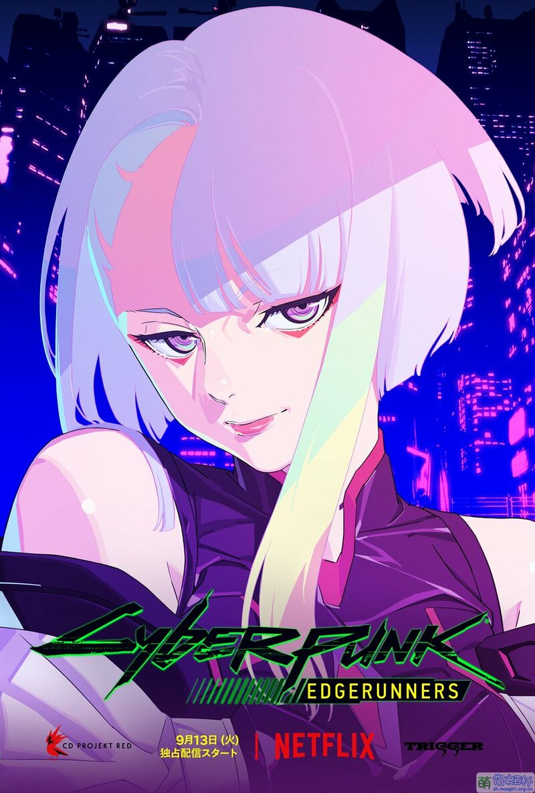
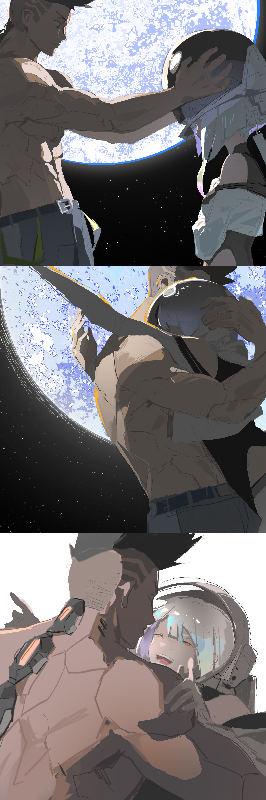

|
||||||
| 首页 | 家乡 | 教程 | 图片 | 视频 | 留言 | |
露西 |
||||||
简介 性格内向，不喜欢谈论自己的过去。 真实身份是赛博朋克小队成员，性格直率，执行任务干净利落。看起来人畜无害，但会毫不犹豫地杀人。 与大卫是恋人。 认为夜之城是一座监狱，梦想是去月球，为此在家中购买了能够模拟月球上真实场景的超梦。 主创Rafał Jaki以其母亲为本角色命名Lucyna，全名为Lucyna Kushinada，有着日本和波兰血统。
|
 |
经历 她最早是通过考核的13名超能力天才小黑客之一，自幼就在其他国家的荒坂设施中长大，却被荒坂设施利用进行旧网价值的挖掘。眼见自己的同伴被蛮横的AI攻击并且接二连三地死亡，她脑子里产生了“反正都要死，不如拼死一逃”的想法，后与幸存的同伴把设施里面的“那些大人”杀害，并成功逃脱到了鲜有人烟的地方。 自荒坂设施逃出后曾去过许多国家，后在夜之城定居，并于一年前被琦薇评价为“原生的天才”，受琦薇邀请加入了赛博朋克小队。 在夜之城内的广场高层活动，身影引起了大卫的注意。 与大卫邂逅于地铁。在窃取了大卫的芯片被发现后得知大卫通过装备义体「斯安威斯坦」进行瞬间移动，于是请求大卫协助自己在地铁内进行芯片窃取。 由于大卫难以接受新义体冲击继而失血过多晕倒，在救护车上照顾大卫时险些遭到抢夺大卫义体的黑帮成员攻击，于是通过在马路上驾驶医用床的方式带领大卫逃脱，并把大卫交给义体医生进行治疗。 带领大卫来到自己家中，在得知大卫的经历后自称“这里（夜之城）才是地狱”，并和大卫一起体验了在月球探险的超梦，认为能够与大卫成为很好的搭档。 然而她引诱大卫来到自己家中的另外一个目的是为了让大卫将曼恩遗失的义体「斯安威斯坦」交回。在大卫得知事情真相，和曼恩等人交流并加入小队后与大卫成为队友，配合默契。有时常带着大卫进行夜跑等体能训练来锻炼大卫的义体适应能力。 在皮拉遭赛博精神病袭击事件中因大卫的勇敢举动而对大卫产生好感，之后在自家的超梦中对大卫表达了自己的爱意，并与大卫深情热吻。 在窃取田中脑内数据时，露西代替被曼恩揍伤而送去抢救的琦薇，继续挖掘数据在潜入田中的意识时发现了义体金刚使用者中有大卫，于是秘密销毁了大卫的使用记录数据，却险些丧命，被大卫紧急拔掉了接线继而存活，但田中的大脑却突然爆裂。露西未能阻止大卫营救处于赛博精神病状态的曼恩，在得知了曼恩之死后受到了很严重的刺激，最后退出了小队，与大卫同居。 在退出小队后，她骇入田中意识删除大卫使用义体金刚记录的痕迹被荒坂科技高层及中间人法拉第发现，被荒坂派出的黑客盯上。 见证了因杀人过多导致精神状态处于赛博精神病边缘的大卫，试图劝说大卫拆除义体，但遭到大卫拒绝，反被大卫劝说回归小队。在拒绝了大卫后攻击法拉第伪装成的黑客，反被琦薇击晕。 在法拉第车上醒来，发现法拉第正在用自己的芯片给大卫打电话骗他安装超级军用级义体“义体金刚”，遂挣脱束缚告知大卫一切都是陷阱，不能安装义体金刚，然而刚逃出浮空车没多久却被法拉第再次制服。 在被法拉第挟持来到荒坂塔后，安装了义体金刚的大卫赶到，杀光了所有警卫救下了露西，但亚当·重锤也赶到了，在激战中向大卫坦言自己不想失去大卫，但大卫表示帮露西实现梦想就是自己的梦想。之后大卫由于抑制剂用尽而在和亚当·重锤的战斗中占据劣势，露西试图骇入亚当·重锤的系统但被对方并打伤。在看到了丽贝卡的死及大卫的惨状后被法尔科开车带走，被法尔科劝说不能回去，否则大卫就白死了。 在一切结束后来到了月球，实现了自己上月球的梦想，并看到了自己幻想中大卫的身影。 |
 |
 |
|  |
| 版权所有：图片源于网络
|